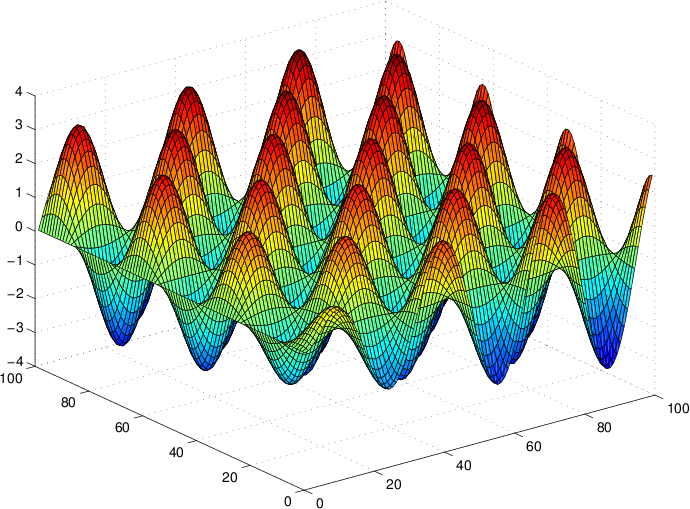

be the function
be the functionLet be the function
where  is the natural logarithm (sometimes written
is the natural logarithm (sometimes written
 ).
).
Write a program that asks the user for integers  and
and
 and computes and writes
and computes and writes  to the
file "outdata.txt" for
to the
file "outdata.txt" for  and
and  . The output (in the file) should be formatted as an
. The output (in the file) should be formatted as an  matrix where
matrix where  is the matrix row number
and
is the matrix row number
and  is the matrix column number.
is the matrix column number.
In more detail:
and
. (These two numbers may be different.) from  to
to
 and for each value of from
to
and for each value of from
to  , compute and output
. Note that the first values of
and are both and the
last values are and ,
respectively.
, compute and output
. Note that the first values of
and are both and the
last values are and ,
respectively. matrix. Each row of the matrix should be a single line in the
output file consisting of m numbers. An example of the output
format is shown below.
matrix. Each row of the matrix should be a single line in the
output file consisting of m numbers. An example of the output
format is shown below.matlab & to start Matlab. Within Matlab, type load outdata.txt
and then type surf(outdata) . Also try clicking, in the "Figure"
window, the menu "Tools" and the option "Rotate3D", to rotate the
figure. Note that for Matlab to correctly read and process the
output, output must be formatted in an
matrix where each row of the matrix is a single line in the
output file consisting of numbers.Program:
Enter m and n: 1 1
File:
0.000
Program:
Enter m and n: 4 7
File:
0.000 0.036 0.131 0.265 0.422 0.583 0.735 0.000 0.066 0.179 0.325 0.487 0.650 0.800 0.000 0.086 0.211 0.360 0.521 0.679 0.820 0.000 0.096 0.223 0.367 0.518 0.664 0.792
Program:
Enter m and n: 25 10
File:
0.000 0.036 0.131 0.265 0.422 0.583 0.735 0.863 0.955 1.003 0.000 0.066 0.179 0.325 0.487 0.650 0.800 0.923 1.009 1.049 0.000 0.086 0.211 0.360 0.521 0.679 0.820 0.935 1.011 1.043 0.000 0.096 0.223 0.367 0.518 0.664 0.792 0.894 0.960 0.984 0.000 0.096 0.214 0.344 0.478 0.604 0.713 0.799 0.852 0.869 0.000 0.085 0.184 0.292 0.399 0.499 0.586 0.652 0.692 0.702 0.000 0.063 0.135 0.211 0.286 0.355 0.413 0.457 0.484 0.489 0.000 0.032 0.068 0.105 0.142 0.175 0.203 0.224 0.236 0.238 -0.000 -0.006 -0.012 -0.019 -0.026 -0.031 -0.036 -0.040 -0.042 -0.042 -0.000 -0.050 -0.103 -0.157 -0.209 -0.255 -0.294 -0.321 -0.336 -0.338 -0.000 -0.096 -0.198 -0.301 -0.399 -0.485 -0.557 -0.608 -0.635 -0.636 -0.000 -0.143 -0.294 -0.444 -0.585 -0.711 -0.813 -0.885 -0.923 -0.922 -0.000 -0.188 -0.383 -0.577 -0.759 -0.919 -1.049 -1.140 -1.186 -1.184 -0.000 -0.227 -0.463 -0.694 -0.911 -1.100 -1.253 -1.359 -1.412 -1.407 -0.000 -0.260 -0.527 -0.788 -1.031 -1.244 -1.413 -1.531 -1.588 -1.581 -0.000 -0.282 -0.571 -0.853 -1.114 -1.341 -1.521 -1.645 -1.705 -1.695 -0.000 -0.294 -0.593 -0.884 -1.153 -1.385 -1.569 -1.695 -1.754 -1.742 -0.000 -0.293 -0.591 -0.879 -1.143 -1.372 -1.552 -1.675 -1.732 -1.718 -0.000 -0.279 -0.562 -0.835 -1.085 -1.300 -1.469 -1.583 -1.635 -1.621 -0.000 -0.253 -0.508 -0.753 -0.978 -1.170 -1.321 -1.422 -1.468 -1.454 -0.000 -0.214 -0.429 -0.636 -0.824 -0.986 -1.112 -1.196 -1.233 -1.220 -0.000 -0.164 -0.329 -0.487 -0.630 -0.753 -0.848 -0.912 -0.939 -0.929 -0.000 -0.105 -0.210 -0.311 -0.402 -0.480 -0.541 -0.581 -0.598 -0.591 -0.000 -0.039 -0.078 -0.116 -0.149 -0.178 -0.200 -0.215 -0.221 -0.219 0.000 0.031 0.062 0.092 0.118 0.141 0.159 0.170 0.175 0.173
Here is the Matlab figure for m = n = 100:

All writing (prose) and coding for every one of the programming assignments, labs, and quizzes is to be done individually. DO NOT LOOK AT OR COPY anyone else's writing or code. DO NOT SHARE your writing or code with anyone else. The only code you can copy is what you see in the book and what I provide to you (in class or on this website). If you are stuck on an assignment or lab, please visit me (or another TA) during office hours. Suspected cases of academic misconduct will be filed with the Committee of Academic Misconduct.